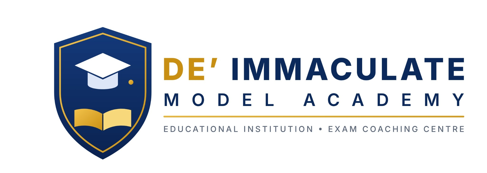

Exam coaching
Subject-focused lessons, revision plans, timed practice and performance feedback for JAMB, WAEC, NECO and Post-UTME.

Focused coaching, smart CBT practice and expert guidance for JAMB, WAEC, NECO and Post-UTME candidates.

Structured teaching and practice for candidates at every stage of their examination journey.
Subject-focused lessons, revision plans, timed practice and performance feedback for JAMB, WAEC, NECO and Post-UTME.
Exam-style CBT with configurable 40–120 question sessions, countdown timer, review, auto-marking and results.
Get explanations, topic summaries, worked examples and quick study support. Connect a secure AI service for live answers.
Class schedules, live-session links, attendance, group chat and learning resources in one place.
Downloadable notes, tutor PDF uploads, practice worksheets and subject-by-subject revision materials.
Track scores, strengths, weak topics, test history and readiness over time.
Ask about available boarding arrangements for JAMB, WAEC, NECO and Post-UTME candidates. Accommodation details, availability, safeguarding arrangements and fees are confirmed directly by the academy.
Enquire about boardingThese are editable launch-price examples, not confirmed academy fee quotations. Contact the academy to confirm current fees.
*Illustrative prices for the website prototype. Replace with approved fees before accepting payment. Boarding is quoted separately.
DE’ Immaculate Model Academy is an educational institution and examination coaching centre in Ado-Ekiti, Ekiti State, Nigeria. The academy supports learners preparing for major national and tertiary-entry examinations.
Location: Along NTA–Ilawe Bypass Road, directly opposite the Federal Polytechnic Ado-Ekiti Satellite Campus.
Business registration: BN-3359087 · Sole proprietorship · Active since April 2021 (as supplied by the academy).
Speak with the academy about admission, coaching, online classes or boarding.